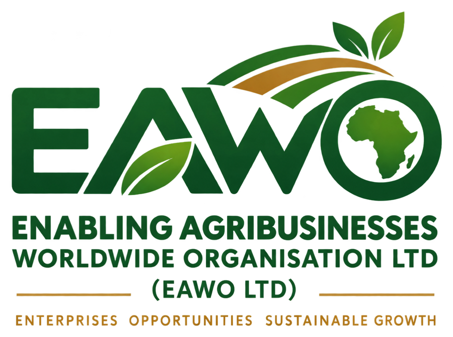

A connector for the people and enterprises behind agriculture.
EAWO Ltd is a Ugandan not-for-profit company limited by guarantee. Our mandate joins enterprise support, capacity building, market and financial linkages, innovation, experiential learning and digital knowledge.
 about-hero.jpg: trade / enterprise
about-hero.jpg: trade / enterpriseVision
A globally competitive, inclusive and sustainable agribusiness ecosystem.
Mission
To enable agribusiness enterprises, farmers, youth and students through integrated capacity building, enterprise development, market and financial linkages, innovation support, digital knowledge and experiential learning.

The EAWO mark.
Our identity brings together the things our work is built on.
Agriculture and enterprise growth.
The continent our work is rooted in, with a mandate that allows national, regional and international partnerships.
Land, harvest and opportunity.
 about-team.jpg: farmers / community
about-team.jpg: farmers / communityWho we work with, and how.
We are a connector, capacity builder, facilitator, knowledge platform, talent bridge, innovation platform and convenor. We work with:
- Agribusiness enterprises and farmers
- Youth and women in agribusiness
- Students, graduates, universities and colleges
- Private-sector organisations, banks and investors
- Government, development partners and technical experts
The gaps we are built to close.
Our response is integrated: build capability, strengthen enterprises, connect them to markets and finance, create practical learning, share knowledge and convene partners.
Fragmented support
Enterprises may get single interventions but not continuous support across business development, markets, finance and growth.
Weak enterprise systems
Many businesses need stronger planning, records, financial management, marketing, operations, governance and compliance.
Limited market access
Finding buyers, understanding requirements, meeting standards and building commercial relationships is hard.
Finance readiness gaps
Access to capital depends on records, costing, cash flow, business plans and a clear investment case.
Limited practical exposure
Students and graduates need real enterprise settings to apply what they have learned.
Knowledge gaps
Useful market information, innovations and opportunities often do not reach the people who need them.
Infrastructure constraints
Many enterprises cannot fund workspaces, incubation, aggregation or processing facilities alone.
Weak ecosystem coordination
Universities, businesses, government and finance providers have complementary strengths but too little coordination.
What we stand for.
Inclusion
Meaningful participation of youth, women and underserved groups.
Integrity
Responsible, transparent and accountable practice.
Partnership
Collaboration across sectors and institutions.
Innovation
Practical adoption of new ideas, technologies and business models.
Evidence
Decisions informed by data, learning and measurable results.
Sustainability
Approaches that create lasting economic, social and environmental value.
Governed for accountability.
Our Articles provide for membership, annual general meetings, a non-executive Board, executive management, financial controls, an annual audit and conflict-of-interest procedures.
- Proper books of accounts and an annual audit by a qualified auditor
- Disclosure and management of conflicts of interest
- Board oversight of policies, budgets and compliance
- Financial year runs 1 July to 30 June
Have an enterprise, a programme or a partnership in mind?
Tell us where you are and what you need. We will help you find the right support and the right people.
Start a conversation